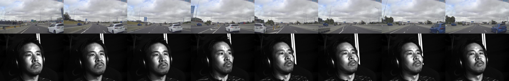

A Multi-Camera Deep Neural Network for Detecting Elevated Alertness in Drivers
Abstract
We present a system for the detection of elevated levels of driver alertness in driver-facing video captured from multiple viewpoints. This problem is important in automotive safety as a helpful feedback signal to determine driver engagement and as a means of automatically flagging anomalous driving events. We generated a dataset of videos from 25 participants overseeing an hour each of driving sequences in a simulator consisting of a mixture of normal and near-miss driving events. Our proposed system consists of a deep neural network which fuses information from three driver-facing cameras to estimate moments of elevated driver alertness. A novel aspect of the system is that it learns to actively re-weight the importance of camera inputs depending on their content. We demonstrate that this approach is not only resilient to dropped or occluded frames, but also has significantly improved performance compared to a system trained on any single stream.

Links
Dataset
The dataset and baseline model are available for download for non-commercial research purposes
upon request.
Acknowledgements
We are grateful to Toyota Research Institute (TRI) for supporting the project and to the conference reviewers for their helpful feedback. This work was completed while the first author was interning at TRI Cambridge.
Citation
@inproceedings{gideon18icassp,
title={A Multi-Camera Deep Neural Network for Detecting Elevated Alertness in Drivers},
author={John Gideon and Simon Stent and Luke Fletcher},
year={2018},
month={April},
booktitle={IEEE International Conference on Acoustics, Speech and Signal Processing (ICASSP)}
}
Changelog
- 2018-02-11: Project site created, paper added